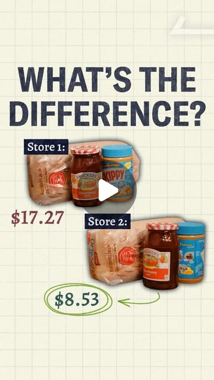

Instagram Post

Zohran’s plan for city-run grocery stores has drawn intense pushback from...
video transcript (enriched by ClaudeClaw)
Summary
[CAPTION]
Zohran’s plan for city-run grocery stores has drawn intense pushback from critics.
But government-run stores already exist in the U.S.
[CAPTION]
Zohran’s plan for city-run grocery stores has drawn intense pushback from critics.
But government-run stores already exist in the U.S. One chain with 250 locations charges at least 25% less than other brands.
It’s run by the U.S. military.
Producer & Editor: @spencertsnyder
[VIDEO]
Peanut butter, jelly, and bread. These are all the exact same products, but they're from four different stores and at four different prices. $17.27 from Christians here in New York City, $11.51 on Amazon, $10.49 at Walmart, and $8.53 for these. Literally half the price of these, but it's also a full 18% less than even Walmart. How is that possible? Now, of course, grocery prices are as high as they've ever been, and you probably even know a lot of the reasons why. More Perfect Union has been covering how consolidation, algorithmic pricing, and price maximization have made grocery shopping nearly impossible for most Americans. But despite a 28% increase in grocery prices since just 2020, doesn't it sometimes feel like no one is actually doing anything about it? Well, this isn't one of those YouTube videos where we just talk about all the things that are broken in our economy. In this video, we're gonna talk about a real solution that could alter your family grocery trips. Grocery stores, cheaper groceries, groceries. That would be New York City Mayor Zaran Mamdani. Still waiting for the cost of groceries to go down. And Trump. Grocery bills. The groceries, groceries went through the roof. Zaron Mamdani's answer to this is government-owned grocery stores. These would be non-profit stores set up as a public utility. But this isn't a new idea. And as critics will tell you, we've tried it, and they don't work. From Florida. The town of Balmwyn is expected to close its only grocery store. To Kansas. The future of a city-owned grocery store in Erie, Kansas is up in the air once again. To Kansas City. But it did close. The Sun Fresh near 31st in prospect. Now, there are a few reasons people give for why this keeps happening and why government-run grocery stores don't have a great track record, or even just can't work. Here are three of the most common arguments I see over and over again. First of all, it's basic economics. Number one is that the numbers just don't add up. The profit margin in a grocery store is one or two percent. Critics will tell you that grocery stores are already just barely scraping by. Private grocers aggressively optimize inventory and labor they buy on massive scales, whereas government-run stores might have procurement rules or political oversight. They would likely be smaller operations, so less leverage over suppliers. So it's effectively impossible to turn a profit. And if you can't turn a profit, or at least break even, so the critics say, the taxpayer will pick up the bill and it won't be worth it. Number two, do we want a government agency deciding what food we have access to? Yeah, well, it's about social control. Because critics argue that a government grocery store won't have the same kind of pressure to honor consumer demand. Inventory could end up being decided by politics. And ultimately, Zaran's idea for a chain of city-owned grocery stores would increase government involvement in our lives, writes Representative Jen Kiggins from Virginia. Number three, a lot of government agencies just suck. So why wouldn't this one? Oh, the government. The government stinks, the lines are too long of the DMV. Essentially, the bureaucracy and slow decision making that make the DMV or the Social Security Office inefficient or unresponsive or just unpleasant would carry over into your shopping experience. Regulating a really low profit margin industry with opaque prices. I'm just not I'm just not sure the state can handle it. So, really, the critics say, privatization becomes the only serious answer. I'm gonna break down each of these arguments for you by the end of this video, but whatever critics might have to say, and we can take a guess as to how Trump might feel about government run grocery stores. We want government out of our business, out of our wallets, and out of our lives. That's what we want. He kind of already has them. Because the largest chain of government run grocery stores, and it's where this sandwich is from, is run by the military. My name is Bill Moore. I am the former CEO and director of the Defense Commissary Agency. Bill oversaw the almost 250 commissaries across the country and around the world, from South Carolina to South Korea. And his mission at the agency is very simple. The Defense Commissary Agency is a global grocery chain whose mission is to provide groceries to military families at significantly lower prices. This dates back to 1825, when the Army started selling goods to military personnel from commissary department storehouses. Before long, the privilege was extended from officers to enlisted men. And over the years, it's really come to be seen as a significant non pay benefit of being in the military. One retiree in 1979 said it like this. In 1946, when I joined the service, I was told that certain things would happen if I lived through 20 years and didn't get killed in combat. I'm entitled to commissaries. It's part of the deal. In the late 1800s, while the rest of the country's food supply was consolidating and privatizing, the military made the decision to build their own retail system rather than plug into what the rest of the country was doing. And by the 1930s, the commissary was extended from service members to their families, such that spouses and dependents could shop at commissaries by themselves. I decided that to fully understand how the commissary works, I needed to go out and talk to one of these military families. So we are here in West Point where we're gonna meet Rachel Sally, and she's gonna tell us about all things commissary. Rachel and her family live on post here at West Point. She runs a successful travel agency, and her husband, who is a captain in the U.S. Army, teaches history here. The commissary is their primary grocery store. It's super helpful here, plus there's only one other grocery store in town. So the options here, if you need something in a pinch, like just go to the commissary. How much is your monthly food budget? In a perfect world, try to stay 100,000 for the month, and we really only eat out like once a week. But actually, on average, households of three to four people spend almost $1,500 a month on groceries. Rachel was super nice and even let me and cameraman Evan follow her around the commissary while she shopped. We weren't allowed to film inside, but the first thing we noticed was that it really just felt like, well, as Rachel put it, like in the normal grocery store. Now I was shocked at what I saw in the commissary because the New York Post had written that government-owned grocery stores led to Soviet-style markets that left customers stuck with just one brand or generic brands of items like bread and milk. Well, that definitely wasn't the case there. And in fact, the commissary seems quite responsive to consumer demands. DECA has altered their entire pricing model to address customer feedback. The commissary model for many, many years was to sell the pro all products at cost plus one percent. This is called a cost plus model, and they would do this across the board. So if the commissary bought paper towels for $13, they sold it for $13.13. If they bought a loaf of bread for $2.50, they sold it for $2.55. But frankly, it created a perception with our customers that we were not saving them money. See, there are these things called known value items or KVIs. So thank milk, eggs, cheese. So usually a grocery store will sell you milk for less than they paid for it. I probably shouldn't mention a specific company. But these large stores right outside of installations, they would sell a gallon of milk for two dollars and fifty cents. We were selling milk at cost for five dollars. And so that gave the perception that everything was more expensive when in total everything was still cheaper. But DECA was responsive and implemented what's called a variable pricing model. We started selling milk at a loss, and we would recover that loss and other products, but products that weren't as important to a struggling military family. The thing is that there are other grocery stores to shop at, which is why DECA is laser focused on maintaining the relevance of the commissary benefit. Because if there were systemic dissatisfaction and DECA started bleeding customers, it could also lead to any number of consequences, including DOD investigations and congressional hearings. The next thing we noticed was that prices were definitely lower than what we're used to. But how is this possible? Because even private grocery stores just squeak by on one percent profit margins. How much money do you think you save? I do feel like the savings compared to like the nearby grocery stores is huge. DECA by law has to provide a 23.7% savings on average. But key to understanding how those savings are achieved is understanding DECA's funding. The Defense Commissary Agency is part of the defense budget. DECA gets about a billion and a half dollars a year. This is the primary way they're able to save military families money. So, in a sense, yeah, the critics are right. Profit margins are extremely thin, and if you want to save working families appreciable amounts of money, you're gonna have to create subsidies. And guess what? At one point, in an effort to fight food insecurity, the defense secretary asked Bill what he could do to help military families even more. I said, Well, for with some additional funding, we can at least increase the savings to a round number of 25%. They increased our budget, so the subsidy became greater, which allowed us to lower the prices. So maybe you take all this to mean that it's true. The secret to all this is that taxpayers foot the bill for some giant subsidy. But actually, the subsidy is quite small. The defense budget is almost a trillion dollars, and the subsidy for DECA is
View original on Instagram Post →